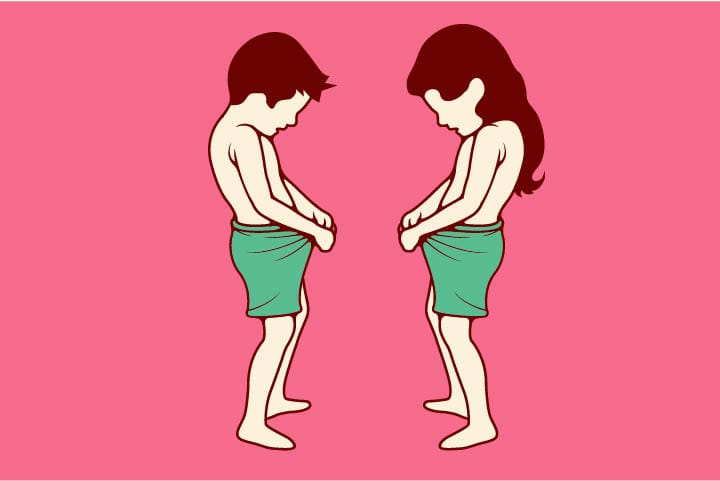

El término "cisgénero" se refiere a las personas cuya identidad de género coincide con el sexo asignado al nacer. Por ejemplo, una persona nacida biológicamente como mujer y que se identifica y se siente como mujer es considerada cisgénero.
Ser cisgénero es una experiencia común para muchas personas, pero es importante reconocer que no todas las personas se identifican de esta manera. La diversidad de identidades de género es amplia y variada, y todas las identidades son válidas y dignas de respeto.
Aquí hay algunas preguntas comunes sobre el género cisgénero, junto con sus respuestas:
1. ¿Qué significa ser cisgénero?
Respuesta: Ser cisgénero significa que la identidad de género de una persona coincide con el sexo que se le asignó al nacer.
2. ¿Cuál es la diferencia entre cisgénero y transgénero?
Respuesta: Mientras que una persona cisgénero se identifica con el sexo asignado al nacer, una persona transgénero se identifica con un género diferente al sexo asignado al nacer.
3. ¿Es ser cisgénero normal?
Respuesta: Ser cisgénero es una experiencia común para muchas personas, pero la normalidad no debe ser un criterio para determinar la validez de las identidades de género.
